📚 部落格 Web API 學習筆記
以部落格當主線，每個階段遇到問題時再學對應主題。先自己寫，寫完再打開 🔒 參考答案。
開始之前：發一篇文章，會經過哪些地方？
📋 情境：做一個部落格平台的後端 API。明天主管打開網站發一篇文章，後天再打開，那篇文章必須還在。
「發一篇文章」看起來很簡單：前端送來標題和內容，後端收下來就好。但「後天還要在」這句話，會把你從前端一路帶到資料庫。先看全景：

按下「送出」後，一篇文章從前端到資料庫、再把結果送回前端的完整來回
| 步驟 | 發生什麼 | 在哪一課學 |
|---|---|---|
| ① | 前端送出 HTTP Request：POST /api/posts，內容是文章的 JSON | 01（3-7 Controller、題 7 .http 檔） |
| ② | PostsController 把 JSON 轉成 PostRequest 物件，交給 EF Core | 01（2-2 請求流程、題 6）；DbContext 怎麼傳進 Controller 是 03 DI |
| ③ | EF Core 把「新增這個物件」翻成 INSERT SQL，透過 Microsoft.Data.SqlClient 送到資料庫 | 01（第 5 節 SQL 對照）；連線字串在 00 |
| ④ | SQL Server 執行並寫入磁碟，回傳新文章的編號 | 00（Docker、volume）；01（題 5 Migration 建表） |
| ⑤ | 後端回傳 201 Created + 文章 JSON | 01（3-7 狀態碼表） |
後天主管再打開網站，前端送出 GET /api/posts，走的是同一條路：EF Core 送出 SELECT，SQL Server 把存著的文章拿回來，再包成 Response 回給前端。
💡 「後天還要在」的兩個條件
- 資料要寫進資料庫，不能只放在程式的記憶體裡。API 重新啟動，記憶體裡的東西就沒了
- 資料庫的檔案不能跟著 container 一起被刪掉，這就是第 0 課 volume 要解決的問題
📌 要記住的一件事：不管中間疊了幾層（Controller、EF Core、SqlClient），最後跟資料庫溝通的永遠是 SQL，資料庫回傳的永遠是結果表。所以每一課都會「觀察 EF Core 產生的 SQL」。
課程清單
📌 怎麼讀：由上往下，一個階段一個階段走，前面的階段是後面的基礎。每個階段裡照 ①、② 的順序。
- 主線是在部落格專案上一課一課往下做的；基礎、補充是放在該讀的位置上的觀念頁，不用動專案；隨查是工具書，用到再翻；深入（選修）可以先跳過
- 課程前面的編號（01、02a、03a…）是課程的代號，其他課會用它來指這一課。閱讀順序以這一頁的排列為準，所以會看到 06 排在 04 前面
找不到符合的課程，換個關鍵字試試。